PT MANAGER
管理者用
契約者の登録から、目標の設定、食品マスタの管理、日々の確認までをまとめたものです。
このアプリの数字の正しさは、あなたが決めています。どこであなたが決めているのかが分かるように書きました。
これはカロリー計算アプリではありません。あなたが指導するための業務システムです。 作りの根っこに1本の方針があります。
AIが出した数字が、そのまま記録になることは一度もありません。 必ず人が見て、直せる状態を経てから保存されます。
| 決めること | 決める人 | 理由 |
|---|---|---|
| 何を食べたか | 契約者 | 本人しか知りません |
| 何グラム食べたか | 契約者 | 同じく本人しか知りません |
| 100gあたりの栄養値 | あなただけ | 調べる人が決めるものだからです |
| 目標値・編集できる期間 | あなただけ | 指導の設計そのものだからです |
もし各自が数値を決められると、「白米」が人によって156kcalだったり200kcalだったりします。 そうなると、あなたが数字を根拠に指導できなくなります。 だから、栄養値の入口を1か所（あなた）に絞ってあります。
契約者Aが契約者Bの記録を見ることはできません。 画面で隠しているのではなく、データを預かっている側（Firestore）で拒否しています。 アプリの画面を書き換えても、他人のデータは1バイトも取り出せません。
クレジットカードを登録しない方針のため、常時動くサーバー処理（Cloud Functions）は使っていません。 そのぶん、次の2つはあなたの手作業になります。
管理者としてログインすると、上に3つのタブが出ます。契約者の画面にはこれは出ません。
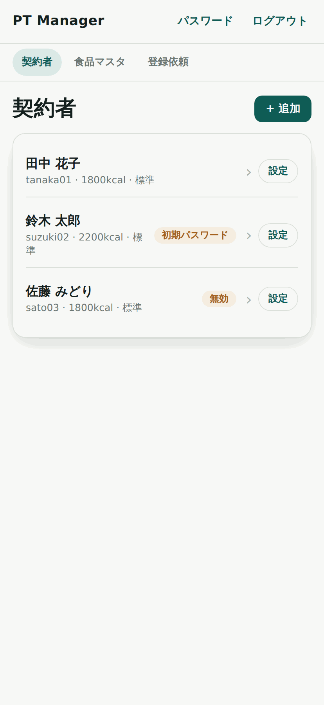
| 契約者 | 契約者の一覧。ここから各人の記録に入ります |
| 食品マスタ | 100gあたりの栄養値の一覧。全員が使う数字です |
| 登録依頼 | 契約者が使った、まだマスタに無い食材が積まれます |
| 初期パスワード | 本人がまだパスワードを変えていません。渡したパスワードのままです |
| 無効 | アカウントを止めています。本人はログインしてもデータを見られません |
| 未完了の契約者 | 作成の途中で止まっています。3章の最後を見てください |
契約者に設定した「◯日前まで」の制限は、あなたには掛かりません。 古い日でも直せます。契約者から「直せません」と言われたときは、あなたが直してください。
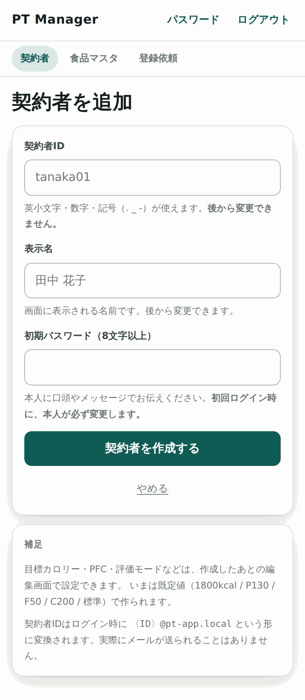
| 欄 | 決まりごと |
|---|---|
| 契約者ID |
ログインIDになります。あとから変更できません。 英小文字・数字と . _ - が使えます。3〜30文字、最初の文字は英小文字か数字。 例: tanaka01 |
| 表示名 | 画面に出る名前。あとから変更できます |
| 初期パスワード | 8文字以上。本人に口頭かメッセージで伝えます |
記録の置き場所そのものに使っているためです。決める前に一度立ち止まってください。 姓＋番号（tanaka01）のように、ルールを決めておくと後から迷いません。 admin root test などは予約されていて使えません。
この3つを伝えてください。本人は初回ログイン時に、必ずパスワードの変更を求められます。変更が済むまで先へ進めません。
契約者IDは、内部で tanaka01@pt-app.local のような形に変換されて使われます。 実在しないドメインで、メールが送られることはありません。 契約者IDの一覧が外に漏れないようにするための仕組みです。
通信が切れるなどして作成が完了しないと、一覧に「未完了の契約者」として残ります。 この人はまだログインできません。
一覧の各行の右にある 設定 から開きます。ここがあなたの設計図です。
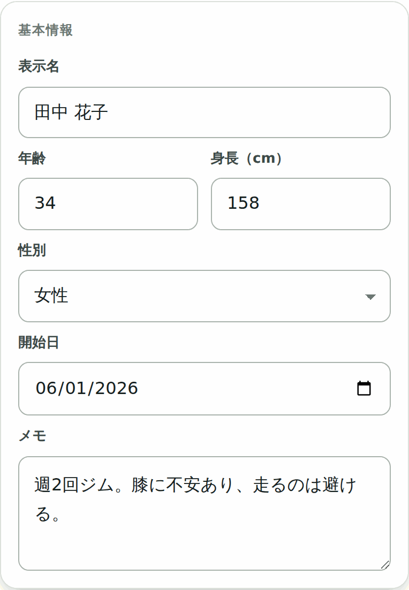
メモには、怪我の有無・生活リズム・注意点などを書いておけます。 ここは契約者には見えません。AIにも送りません。
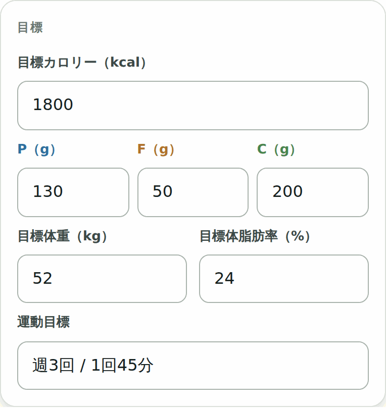
| 欄 | 入れられる範囲 | 既定値 |
|---|---|---|
| 目標カロリー | 500 〜 6000 kcal | 1800 |
| P（たんぱく質） | 0 〜 500 g | 130 |
| F（脂質） | 0 〜 300 g | 50 |
| C（炭水化物） | 0 〜 800 g | 200 |
| 目標体重 | 20 〜 300 kg（任意） | 未設定 |
| 目標体脂肪率 | 1 〜 60 %（任意） | 未設定 |
| 運動目標 | 自由記入（例:「週3回 / 1回45分」） | 空 |
PFCから逆算したカロリーと、入れた目標カロリーが1割以上ずれると警告が出ます。
止めはしません。意図してずらしているならそのままで構いません。打ち間違いに気づくためのものです。
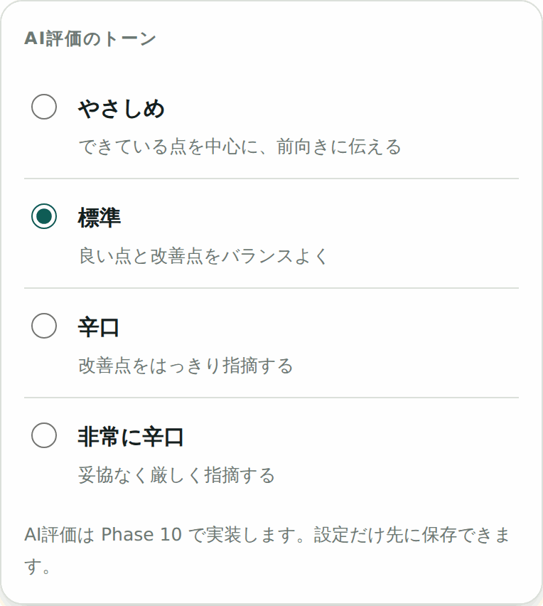
| やさしめ | できている点を中心に、前向きに伝える |
| 標準（既定） | 良い点と改善点をバランスよく |
| 辛口 | 改善点をはっきり指摘する |
| 非常に辛口 | 妥協なく厳しく指摘する |
始めたばかりの方に厳しい言葉が続くと、記録そのものが止まります。 続いてきたら上げる、という順のほうがうまくいきます。人ごとに変えられます。
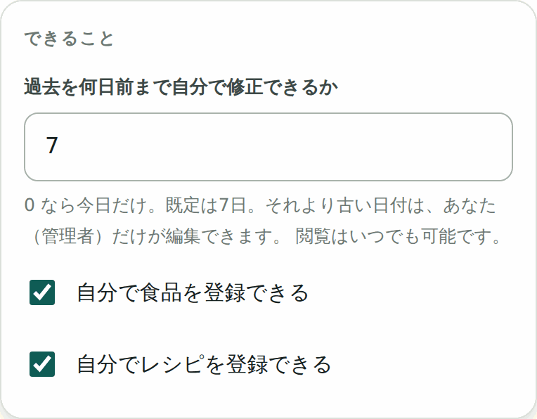
| 過去を何日前まで 自分で修正できるか |
既定は7日。0にすると当日だけになります。 これより古い日は、あなただけが編集できます。 契約者はいつでも「見る」ことはできます。 |
契約者が自分で確定を解除できるのも、この期間内だけです。 0日にすると、当日を過ぎたら本人は何も直せなくなります。 厳しく運用したい相手にだけ使ってください。
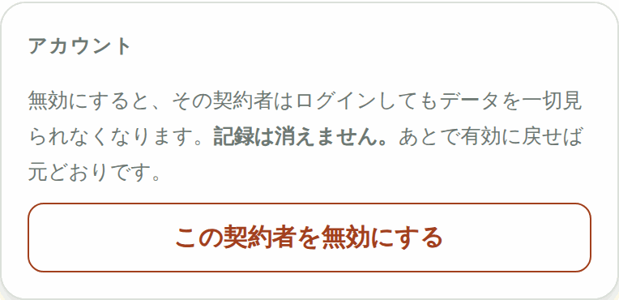
基本情報・目標・トーン・できることは、まとめて1つの「保存する」で保存します。 押さずに画面を離れると、入力は消えます。
慣れると1人あたり1〜2分です。順番を決めておくと、見落としが減ります。
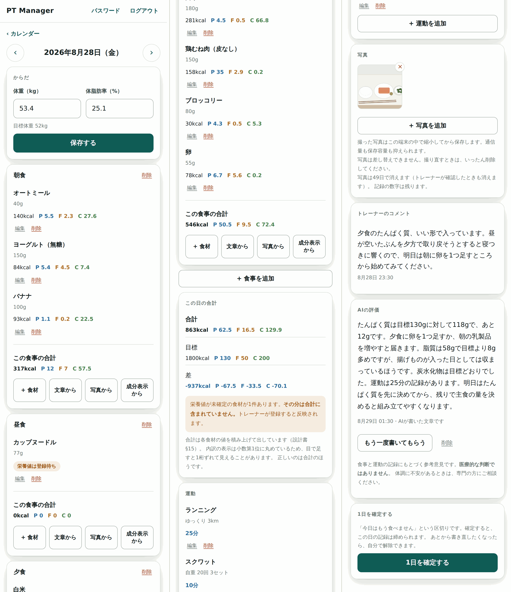
合計が目標より極端に少ないときは、たいてい栄養値が未確定の食材があるためです。 合計の下に「◯件あります」と出ます。7章で処理すれば、その日の数字はすぐ埋まります。
ここに入れた100gあたりの値が、全員に使われます。このアプリの数字の出どころです。
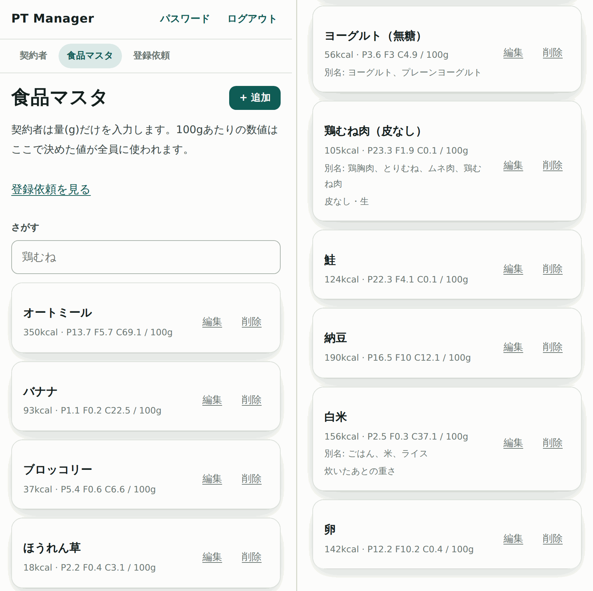
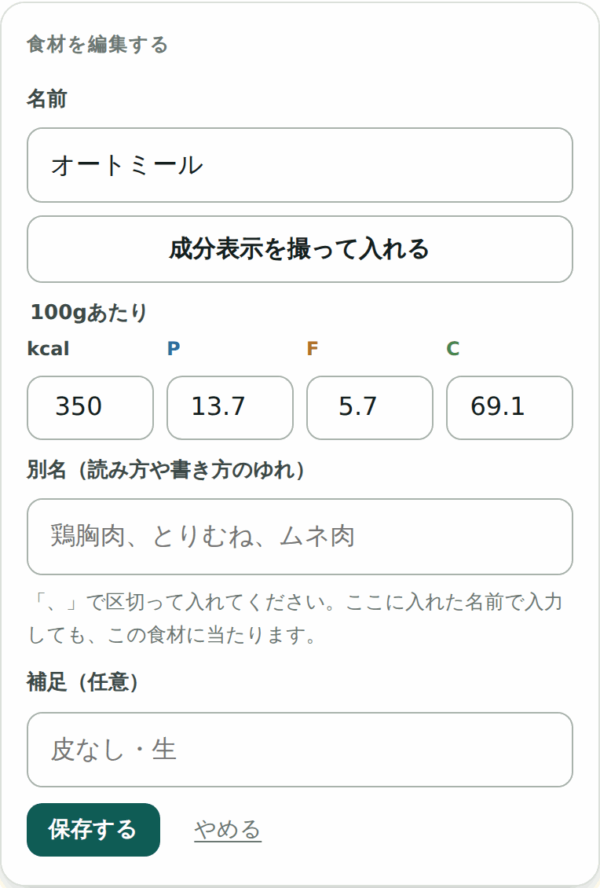
| 名前 | 代表の表記。契約者の記録にもこの名前が入ります |
| 100gあたり | kcal・P・F・C。すべて必須です |
| 別名 | 「、」で区切って入れます。ここに入れた名前で入力しても、この食材に当たります |
| 補足 | 「皮なし・生」など。判断の手がかりに |
「鶏胸肉」「とりむね」「ムネ肉」を別名に入れておけば、契約者がどう打っても同じ食材にまとまります。 ここを省くと、同じ食材の登録依頼が何度も上がってきます。
似た食材がすでにあります。同じものなら、新しく作らずそちらに別名を足してください。
新しく登録するときだけ出ます。名前が6割以上似ている食材が最大4件、参考として並びます。 同じものなら、新しく作らずに既存のほうへ別名を足してください。
PFCから計算すると約◯kcalですが、◯kcalと入力されています。桁の入力ミスがないか確認してください。
PFCから計算したカロリーと、入れたkcalが2倍以上ずれたときだけ出ます。桁の打ち間違いを見つけるためのものです。
野菜は食物繊維のぶん、計算値のほうが高く出るのが普通です （ブロッコリーは実際37kcal・計算値53kcal）。正常なずれで止めてしまうと、警告そのものを無視するようになります。 だから、明らかにおかしいときだけ出るようにしてあります。
編集画面の 「成分表示を撮って入れる」 から、市販品の栄養成分表示を撮って値を入れられます。 読み取った値は入力欄に入るだけで、保存はされません。必ず確かめてから保存してください。
削除すると、これから入力するときに候補に出なくなるだけです。 すでに記録されている食材のkcal・PFCはそのまま残ります。
契約者が使った、まだマスタに無い食材が積まれます。 ここを処理するまで、その食材は契約者の合計に入りません。
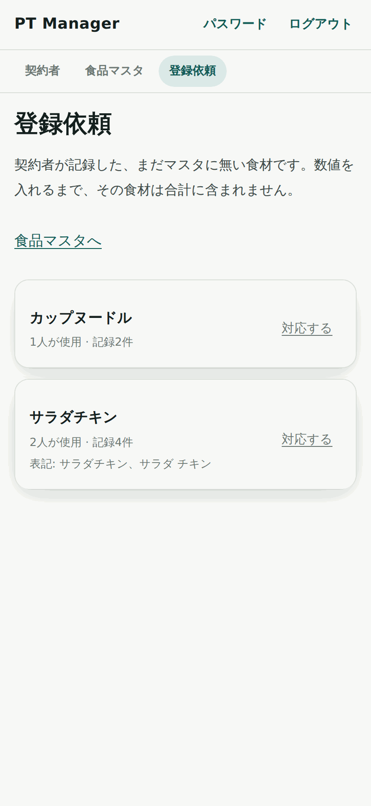
対応する を押すと、その依頼の中身が開きます。
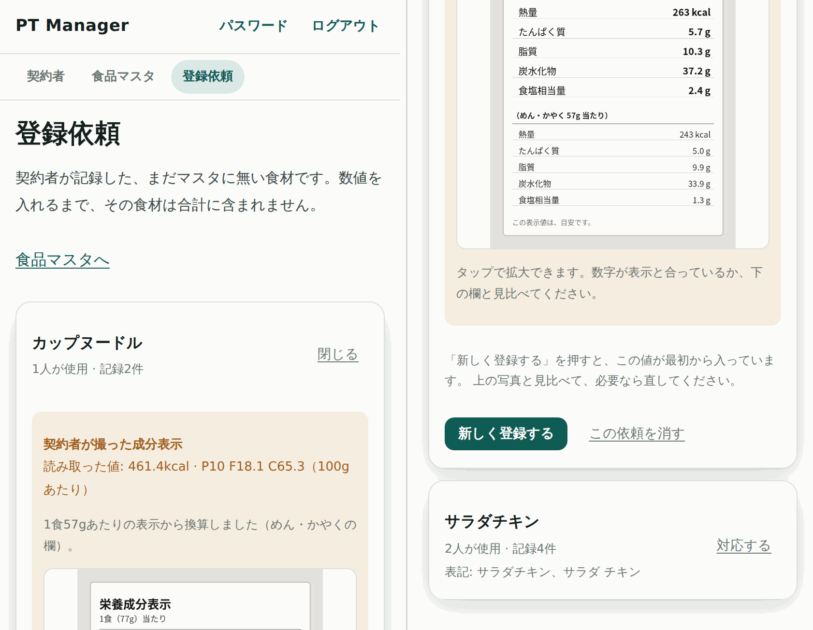
写真を押すと拡大できます。数字だけでは、あなたは確かめようがありません。
たとえばカップ麺には「1食263kcal」と「めん・かやく243kcal」が並んでいます。
どちらを読んだかで2割ずれます。見抜けるのは、表示そのものを見たときだけです。
その食材を「登録待ち」のまま持っている過去の記録に、登録した値が入ります。 契約者側の合計もその場で変わります。契約者が入れ直す必要はありません。
完了すると、こう出ます。
待っていた記録◯件に、この値を入れました（◯日分）。契約者の合計に反映されています。
変更履歴に残しました。
この依頼は処理済みとして閉じました。
この依頼を消す を押すと、マスタに入れずに依頼だけ消えます。 ただし契約者側の記録は「登録待ち」のまま残ります。 合計にも入りません。消す前に、本当にそれでよいか考えてください。
ここが溜まると、契約者の画面では合計がずっと0のままになります。 毎日の最初にここを見る、と決めてしまうのがいちばん確実です。
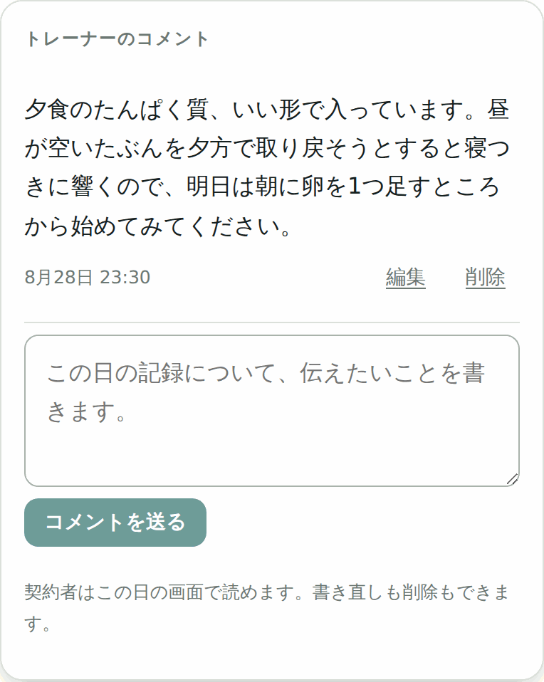
| 書ける人 | あなただけ |
| 契約者 | 読むだけ。書き換えも削除もできません |
| 1件の長さ | 2000文字まで |
| 確定済みの日 | 書けます。確定はトレーナーが黙る合図ではありません |
空の欄が毎日並ぶのを避けるためです。あなたが1件書けば、そのとき出ます。
人が書いた言葉が先に目に入るようにしてあります。 AIの文章は、そのあとの参考です。
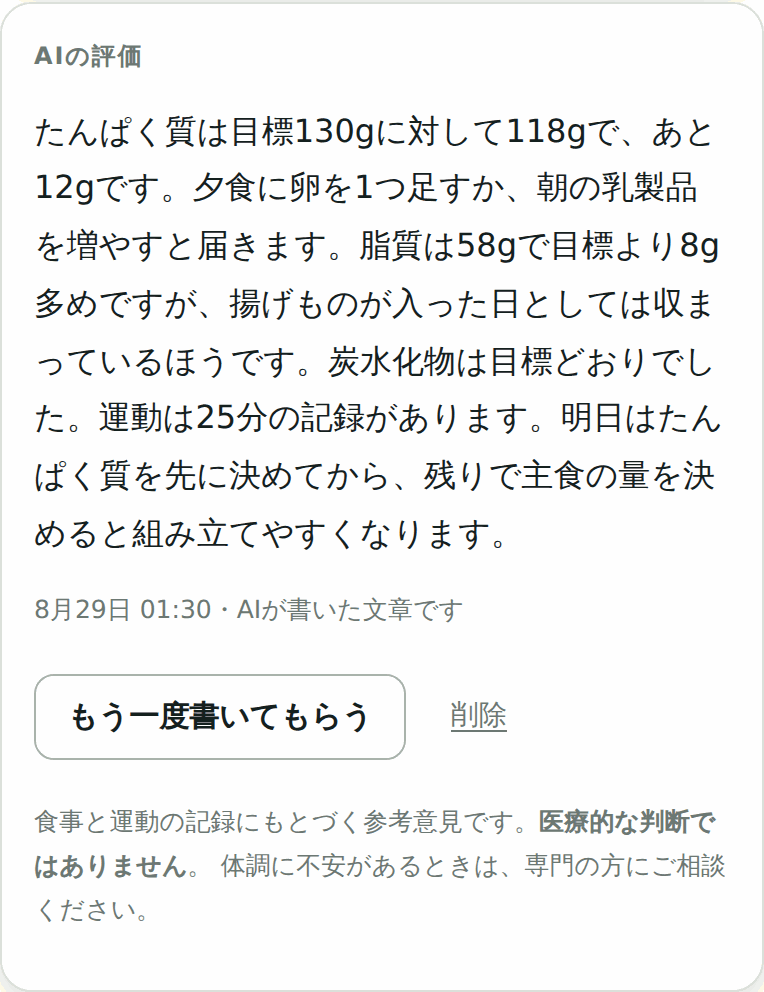
1日確定のたびに自動で作る形にはしていません。確定は解除して付け直せるので、そのたびにAIを使うことになるためです。 無料の枠は有限なので、回数を人が握れる形にしてあります。
1日につき1件だけ持ちます。書き直すと前のものは消えます。履歴は残りません。
確定した日は契約者にとって編集できない日なので、生成のボタンも消えます。
あなたはいつでも押せます。確定済みの日でも生成・削除ができます。
| 送っているもの | 送っていないもの |
|---|---|
|
合計（kcal・P・F・C） 目標（kcal・P・F・C） 運動の分数 食事の記録件数 登録待ちの件数 評価モード |
契約者ID 氏名・年齢・性別 体重・体脂肪率 メモ ほかの日の記録 |
AIから見れば、誰のものか分からない数字の組です。
| 第1層 指示文 |
AIへの指示で、診断・病名・極端なやり方を禁じています。 ただしこれは「守られることを期待している」だけで、確かめてはいません |
| 第2層 機械的な検査 |
出てきた文章を表示する前に必ず検査します。 引っかかった文章は画面に出しません |
疲れ・むくみ・だるさ、といった一般的な体調の話は通します。 そこまで止めると、食事指導として当たり前の会話までできなくなるためです。
食事と運動の記録にもとづく参考意見です。医療的な判断ではありません。
体調に不安があるときは、専門の方にご相談ください。
検査を通っても、内容が的外れなことはあります。読んでから残すのが原則です。 おかしければ 削除 してください。あなたのコメントで補うほうが、ずっと役に立ちます。
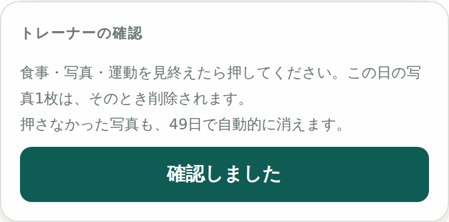
| 1日確定 | トレーナーの確認 | |
|---|---|---|
| 押す人 | 契約者 | あなた |
| 意味 | 「今日はもう食べません」 | 「食事・写真・運動を見ました」 |
| 写真 | 消えません | その日のぶんが消えます |
| 取り消し | 本人が期間内なら可 | いつでも可 |
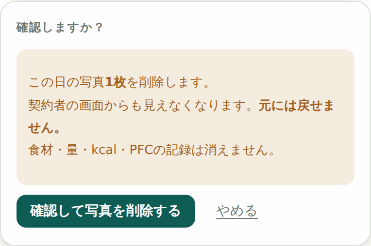
契約者の画面からも見えなくなります。見終わってから押してください。
食材・量・kcal・PFCの記録は消えません。
保存できる場所が1GBしかないためです。写真は7週間（49日）で自動的に消えます。 契約者には、消える2日前にカレンダーで知らせが出ます。
取り消せるのは「確認済み」という印だけです。押し間違えたときに、印だけ残るのを避けるための機能です。 写真そのものは戻らないので、押す前の確認画面をよく読んでください。
削除する仕組みは、あえて用意していません。取り返しがつかないためです。
再開する可能性がありますし、記録は指導の履歴でもあります。無効にして残しておいてください。
アプリを更新したとき、ルール（firebase/firestore.rules）の中身が変わっていたら、 Firebase コンソールに手で貼り直す必要があります。
画面は普通に動くのに、書き込みだけが静かに拒否されます。エラーも出ません。
以前、「契約者が登録依頼を出しているのに管理者側に1件も出てこない」という状態が起きたのは、これが原因でした。
| 保存できる量 | 1GB。写真がいちばん食います（だから49日で消しています） |
| 読み書きの回数 | 1日あたりの上限があります。契約者1〜10人なら、まず足ります |
| 写真の削除 | 戻せません |
| 未完了データの削除 | 戻せません（作り直しは可能） |
| 食材の削除 | 過去の記録の数字は変わりません。候補に出なくなるだけ |
| 依頼を消す | 契約者側は「登録待ち」のまま残ります |
| 契約者そのもの | 削除する仕組みはありません。無効を使ってください |
契約者がパスワードを忘れました。
Firebase コンソール → Authentication → 該当のユーザー（◯◯@pt-app.local）を選び、パスワードを再設定してください。新しいパスワードを本人に伝えます。アプリの中から再設定する仕組みはありません。
契約者から「登録依頼を出したのに反映されない」と言われました。
まず「登録依頼」タブを見てください。1件も出ていないなら、ルールの貼り直しを忘れている可能性が高いです（12-1）。
契約者が「文章から」「写真から」を使えないと言っています。
その人がAIの利用に同意していない可能性があります。設定画面の「AIの利用」で状態が見られます。同意はご本人しかできません。あなたが代わりに同意することはできません。
合計が明らかに少ないです。
「栄養値が未確定の食材が◯件あります」と出ていないか確認してください。登録依頼を処理すれば埋まります（7章）。
同じ食材の依頼が何度も上がってきます。
別名が足りていません。マスタでその食材を開き、実際に使われている表記をすべて別名に入れてください（6-1）。
マスタの値を間違えて登録しました。
マスタを直せば、これから入力するぶんには新しい値が使われます。すでに記録されているぶんは、記録した時点の値のままです。直したい日があれば、その日を開いて食材を入れ直してください。
契約者が古い日を直せないと言っています。
設定した日数を過ぎています（4-4）。あなたはいつでも直せるので、代わりに直すか、その人の日数を延ばしてください。
AIの評価が「表示していません」と出ます。
生成された文章に、病名や体に負担のかかるやり方が混ざっていたということです（9-3）。もう一度押せば、たいてい別の文章になります。
アプリを更新したあと、画面が古いままです。
端末に残っている以前のファイルが使われています。ブラウザを一度閉じて開き直すか、ホーム画面のアイコンから開き直してください。
契約者が退会しました。
設定画面のいちばん下で無効にしてください。削除はできませんし、するべきでもありません（11章）。
この冊子は、いまの画面に合わせて作っています。
アプリを更新して画面が変わったときは、この冊子も作り直してください。